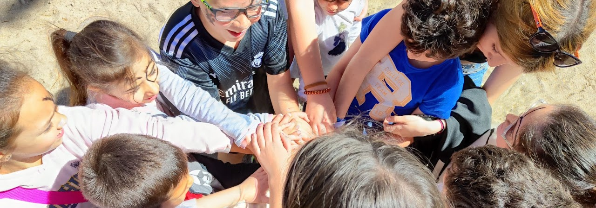

Desarrollo Personal y Bienestar
Habilidades sociales y autonomía
Trabajo en grupo para: adquirir habilidades para la vida, relaciones sociales, familiares, autocontrol, espera, resolución de problemas de la vida cotidiana y mucho más
Atención temprana y estimulación cognitiva

Atención preventiva y asistencial para favorecer el desarrollo, autonomía y bienestar. Trabajamos patologías como Parkinson, Alzheimer, demencias